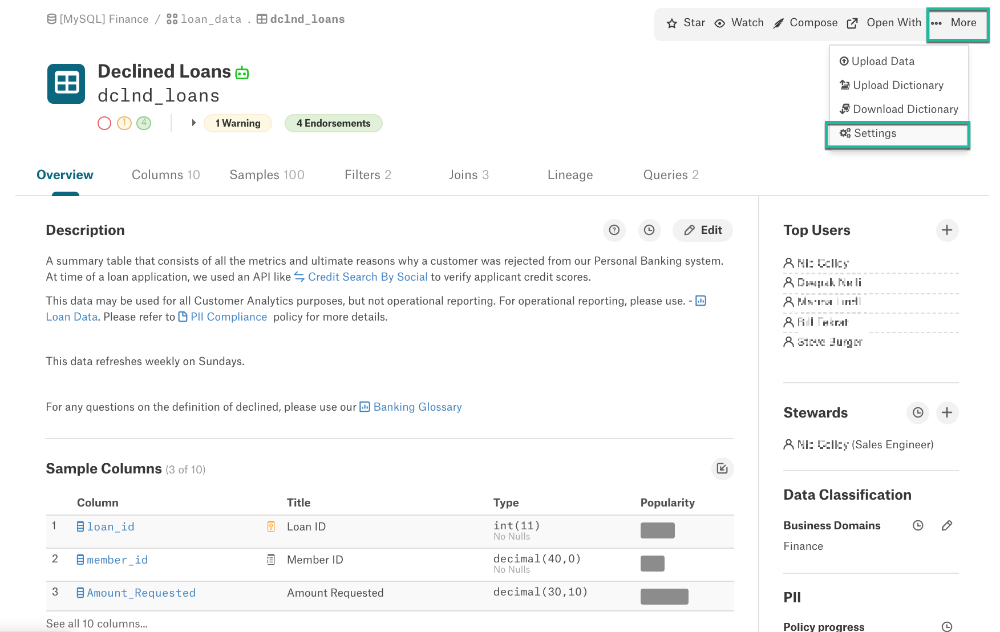
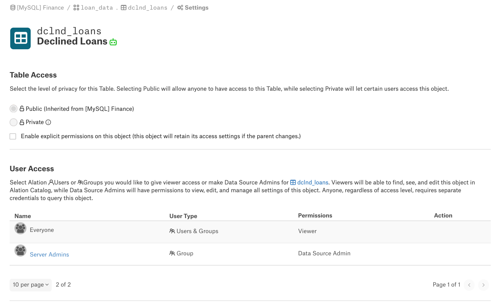
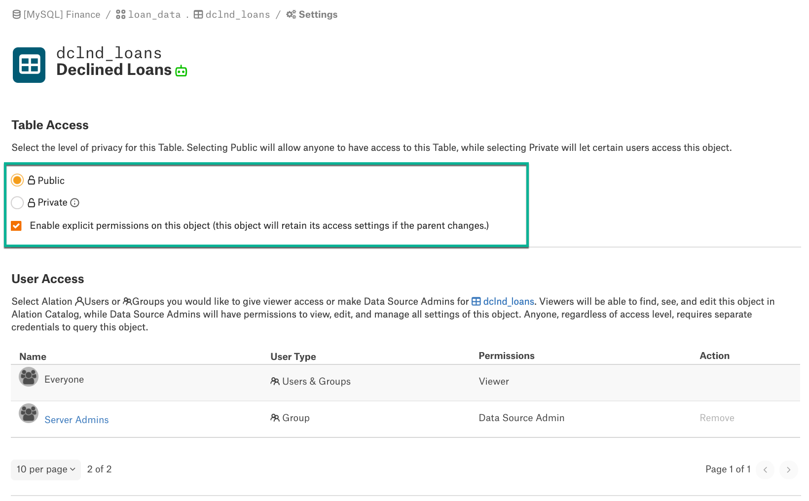
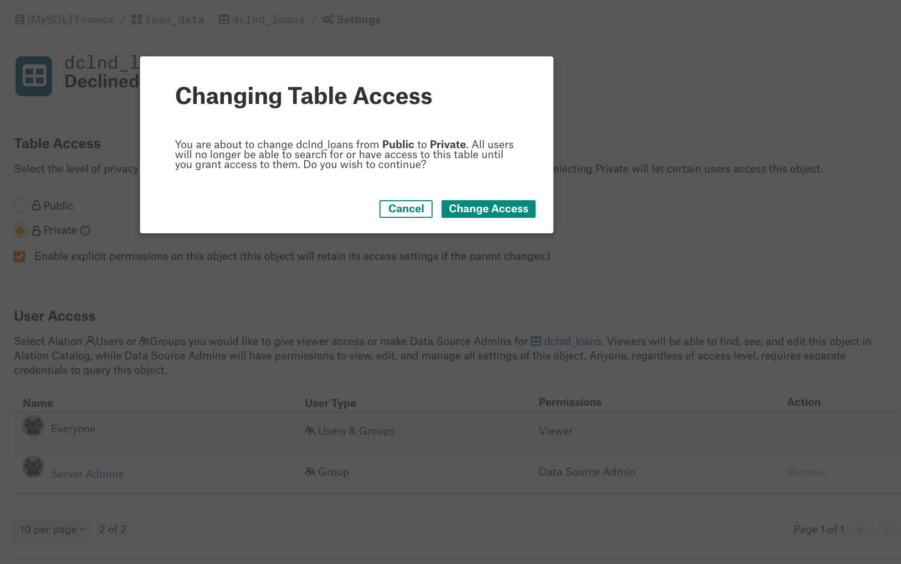
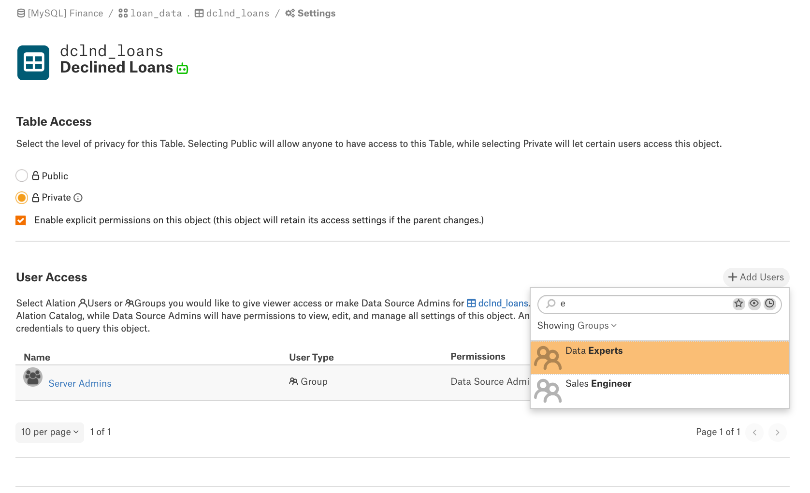
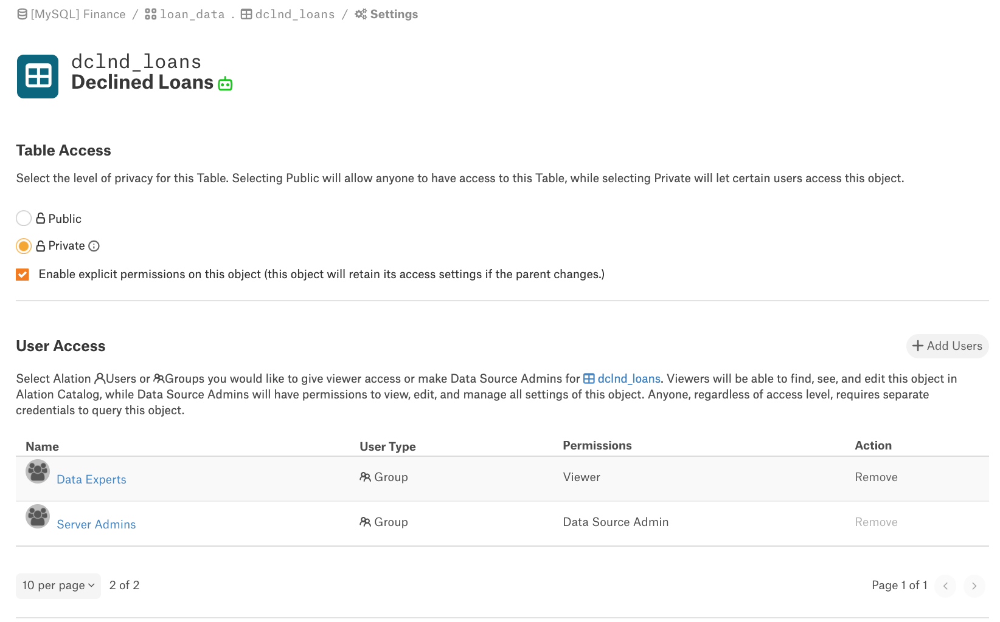

Table Privacy Settings¶
Applies from release 2020.4
In the Alation Catalog, user access to Table objects can be controlled separately from access to the parent Data Source: permissions to view a table can be set for a specific table object.
Note
On how to enable this functionality in an Alation instance, see Enable Table Privacy.
Using table-level access permissions, you can restrict access to sensitive tables in a Public data source or make some tables visible to only a subset of users in a Private data source. Explicit table-level Privacy settings take precedence over the parent data source Privacy settings.
By default, child table objects inherit the Privacy settings of the parent data source. If a data source is set to Public, all its child objects are by default Public and accessible to all Catalog users. If a data source is set to Private, all its child objects are by default treated as Private and are only visible to users who are granted access.
By default, table objects under a Public data source are accessible by:
Everyone (Viewer access)
By default, table objects under a Private data source are accessible by:
The Server Admin who set up this Private data source
Other Server Admin users: Server Admins can view Private data sources and give Data Source Admin access to themselves.
In the Catalog, Private tables with access permissions explicitly granted to specific users and groups are visible to these users and groups only. This includes discoverability using the Alation Search, lists of child tables under parent schemas, references to table objects in the Related Objects field on catalog pages, @-mentions in text fields Conversations, and the Analytical Stewardship reports.
Configure Table Privacy¶
To set explicit access permissions for a table, you need the Server Admin role or the Data Source Admin access to the data source or the Data Source Admin access to the table.
To specify access permissions for a Table:
Open the catalog page of the Table object for which you wish to set access permissions.
On the top right, click More and then Settings to open the Settings page for this table:
On the Table Settings page, view the current Privacy settings of the table under Table Access. By default, table access permissions are inherited from the parent data source and are not editable:
Select the checkbox Enable explicit permissions on this object (this object will retain its access settings if the parent changes). This will make the Privacy settings editable:
Change the Privacy of the table by selecting the Public or Private radio button under Table Access and confirm your choice:
For tables set to Private, give access to specific users or groups by clicking Add Users and then finding the user or group in the Quick Search list:
The user or group will be given access permissions to the Table. If the user or group already has access to the parent data source, the level of permissions (Viewer or Data Source Admin) will be inherited from the data source.
Changes are immediately applied to all Catalog areas that expose table objects except Search and Compose. For Search and Compose, the Search index has to be recalculated for the changes to apply. The Search index update is triggered automatically after table Privacy changes.
Note
For the Analytical Stewardship reports, the list of Table objects in the Detailed view of the reports only includes the Table objects that a user has permissions to view.
Revoke Table Access Permissions¶
To revoke table access permissions from a user or a group, locate this user or group in the User Access table and click Remove in the Action column for this user or group.
Note
Access cannot be removed from the last Data Source Admin.
Levels of Table Access¶
The level of permissions a user or group receives to a Private table - Viewer or Data Source Admin - is inherited from the parent data source. For example, if a user or group already has access to the parent data source with the Data Source Admin access, then when you grant access to a Private table to such a user or group, they will inherit the Data Source Admin access from the parent data source. In other words, if you are a Data Source Admin for a data source, you are a Data Source Admin for the Private tables that you are granted access to.
If a user or group does not have access to the data source or has the Viewer access, then when this user or group is given explicit access to a Private table, they will receive the Viewer permissions. In other words, if you do not have admin access to the parent data source and are only granted access to select tables, you are going to get the Viewer access to these tables.
The Viewer can:
Find the Private table in search
See the Private table listed under the parent schema if the parent data source is visible to this user
View the catalog page of the Private table and its child objects
Open the catalog page of the table using references to this table in the Catalog field values
Access the table in all the areas of the data Catalog where this table is exposed
The Data Source Admin can:
In addition to viewing the Private table in the Catalog, access the Settings page for this table and modify the Access permissions.
Access Permissions Hierarchy¶
For Private tables, the access permissions granted to users and groups on the Table level are treated as primary permissions that take precedence over the permissions given at the data source level:
If a data source is Public, but a table under this data source is Private with access restricted to specific users and groups, then in the Catalog, this table is visible to users and groups with explicit access only.
If a data source is Private, but a table under this data source is Public, then everyone will be able to find this table using the Alation search.
If a data source is Private with access granted to one set of users or groups, and a table is Private with access granted to a different set of users or groups, then the table will only be visible to users or groups who have been explicitly granted access permissions to this specific table.
Access to Column Objects¶
Access permissions cannot be explicitly defined for an individual column object as they are inherited from the parent table. If the parent table is Public, the child column objects will be accessible by everyone as well. If the parent table is Private with access restricted to specific users and groups, the child column objects under this table inherit these settings.
Using Private Tables in Compose¶
Compose Auto-Suggest will exclude Private tables with explicit access permissions differing from the data source Privacy settings for all users. Even the users who have access to Private tables will not see them in the Auto-Suggest list. This means:
If a data source is Public but some of its tables are Private with access given to specific users or groups only, these tables will not appear in the Auto-Suggest for any Compose users.
If a data source is Private and some of its tables have explicit access permissions, these tables will not appear in the Auto-Suggest for any Compose users. The Private data source itself and those of its tables that inherit the parent data source settings will appear in Auto-Suggest to the users who have access to the data source.
Note
Compose does not prevent users from executing queries on tables hidden from the Catalog with the help of explicit access permissions. In Compose, users can query tables that they have been granted access to on the database level.
If you are querying a table with restricted access, it is not recommended to publish or share such a query to prevent exposure of sensitive data.
Private Tables in the Analytical Stewardship Reports¶
The charts on the Analytical Stewardship Dashboard are built using the data of all relevant Catalog objects. However, the data in table reports below the charts that list specific objects and the filters only include the objects that the current user has explicit access to in the Catalog.
This applies to:
The Curation Progress report
The Catalog Activity report
The Data Objects Without Stewards report
@-Mentioning a Private Table in a Field or a Conversation¶
When adding a new @-mention to a rich text field, a user will only see the tables they have explicit access to in the Quick Search box. However, table objects @-mentioned before their permissions were changed to Private will still be present as references in the saved rich text field content. In general, it is advisable to refrain from mentioning sensitive tables.
Object Set Fields¶
When adding a table object as a value to an object set field, a user will only see the tables they have explicit access to in the Quick Search box. However, table objects added to object set fields before their permissions were changed to Private will still be present as object set field values unless they are located and deleted. In general, it is recommended to refrain from referencing sensitive tables in object set fields.